AI / Agent 晨间简报
生成日期：2026-07-06（周一）｜信息截止时间：2026-07-06 15:39:03 CST (UTC+0800)｜主题：coding agent benchmark、test/code co-evolution、Agent Skill / MCP 工具链、GitHub 三日增长
1. 今日论文
选择理由：7/4-7/6 期间未发现比这篇更贴合 coding agent benchmark 的新论文。TestEvo-Bench 直接评估 agent 是否能让测试与代码变更共同演化，并提供可执行 runner、动态标签、时间戳切分与 live benchmark 机制，比只看静态 diff 或覆盖率更能反映工程 agent 能力。
TestEvo-Bench: An Executable and Live Benchmark for Test and Code Co-Evolution
- 作者：Jiale Amber Wang, Kaiyuan Wang, Pengyu Nie
- 发布日期：2026-07-02（arXiv citation_date 2026/07/02）
- 论文链接：arXiv:2607.02469；PDF
- 项目 / 数据：项目与 leaderboard；Hugging Face 主页；generation 数据集；update 数据集；匿名代码仓库
English overview
TestEvo-Bench turns test-and-code co-evolution into an executable benchmark for coding agents. Instead of asking a model to write tests for a static code snapshot, it mines real repository revision pairs where production code and tests changed together. The benchmark has two tracks: test generation, where the agent adds new tests that pass on the new revision and fail on the old revision, and test update, where the agent adapts old tests to the new behavior. Each task ships enough build, dependency, and execution context to compile and run the produced tests.
The current snapshot contains 746 test-generation tasks and 509 test-update tasks from 91 Java Maven repositories after filtering 59,950 candidate co-evolution records across 152 projects. Four agent configurations are evaluated: Claude Code, Gemini CLI, SWE-Agent with Claude Opus 4.7, and SWE-Agent with Gemini 3.1 Pro. The strongest systems reach 77.5% success on generation and 74.6% on update, but performance drops on the newest time slices and under tight cost caps. The main limitations are Java/Maven scope, limited model-harness coverage, and the high cost of execution-backed evaluation.
对应中文翻译
TestEvo-Bench 把测试与代码协同演化变成一个面向 coding agent 的可执行 benchmark。它不是让模型针对静态代码快照写测试，而是从真实仓库中挖掘生产代码和测试一起变化的 revision pair。benchmark 包含两条赛道：test generation 要求 agent 添加新测试，并且这些测试在新 revision 上通过、在旧 revision 上失败；test update 要求 agent 把旧测试改到适配新行为。每个任务都携带足够的构建、依赖与执行上下文，用来编译和运行 agent 产出的测试。
当前快照包含 746 个测试生成任务和 509 个测试更新任务，来自 91 个 Java Maven 仓库；这些任务是从 152 个项目的 59,950 条候选协同演化记录中过滤得到的。论文评测了四类 agent 配置：Claude Code、Gemini CLI、SWE-Agent + Claude Opus 4.7、SWE-Agent + Gemini 3.1 Pro。最强系统在生成任务上达到 77.5% 成功率，在更新任务上达到 74.6%；但在最新时间切片与严格成本限制下表现下降。主要局限是只覆盖 Java/Maven、模型/框架组合有限，以及执行背书评测成本较高。
核心方法、创新点、实验结论与局限
- 方法：三阶段管线先挖掘 test-code change pair，再用跨 revision 执行、依赖映射、覆盖与 mutation 信号清洗，最后打包成可执行 agent 任务。
- 创新：用“新测试在新代码通过、旧代码失败”等动态标签定义任务成功，而不是依赖静态 co-change 或 diff similarity；同时支持按时间切片评估，降低训练污染风险。
- 结论：Claude Code 与 Gemini CLI 在 test generation 均为 77.5%；Gemini CLI 在 test update 为 74.6%。新近任务成功率更低，说明 benchmark 尚未饱和。
- 局限：只覆盖 Java Maven；四个 agent 配置不能代表全部生态；执行、覆盖、mutation 分析成本高，完整运行约 72 小时级别。
关键表格转写
Table 1：TestEvo-Bench statistics
| Track | #Task | #Test/Task | #Code/Task | #Test Token/Task | #Code Token/Task | Test Exec Time | Agent Run Time |
|---|---|---|---|---|---|---|---|
| Test generation | 746 | 2.63 | 2.32 | 344 | 316 | 59m 55s | 39h 2m 27s |
| Test update | 509 | 2.24 | 3.15 | 989 | 424 | 43m 50s | 33h 21m 52s |
Table 3：Agent experimental results
| Track | Harness | Model | Success | Redundant / ExecFail | CmplFail | HrnsFail | CovOnPass | MutOnPass |
|---|---|---|---|---|---|---|---|---|
| Generation | Claude Code | Claude Opus 4.7 | 77.5% | 19.9% | 2.3% | 0.0% | 76.8% | 56.6% |
| Generation | Gemini CLI | Gemini 3.1 Pro | 77.5% | 19.9% | 2.2% | 0.0% | 75.1% | 55.0% |
| Generation | SWE-Agent | Claude Opus 4.7 | 66.1% | 17.4% | 2.1% | 14.1% | 78.0% | 57.1% |
| Generation | SWE-Agent | Gemini 3.1 Pro | 68.6% | 19.2% | 2.0% | 10.1% | 74.3% | 55.6% |
| Update | Claude Code | Claude Opus 4.7 | 74.4% | 23.8% | 1.8% | 0.0% | 79.4% | 44.6% |
| Update | Gemini CLI | Gemini 3.1 Pro | 74.6% | 23.6% | 1.4% | 0.4% | 79.1% | 44.9% |
| Update | SWE-Agent | Claude Opus 4.7 | 65.6% | 19.1% | 4.3% | 11.0% | 79.2% | 46.0% |
| Update | SWE-Agent | Gemini 3.1 Pro | 73.9% | 19.8% | 2.8% | 3.5% | 79.1% | 44.7% |
论文公开图表全量索引
PDF 共 22 页。下列截图按论文顺序覆盖所有公开可访问的 7 张图和 12 张表；其中 Table 6-9 位于同一页，因此合并展示。
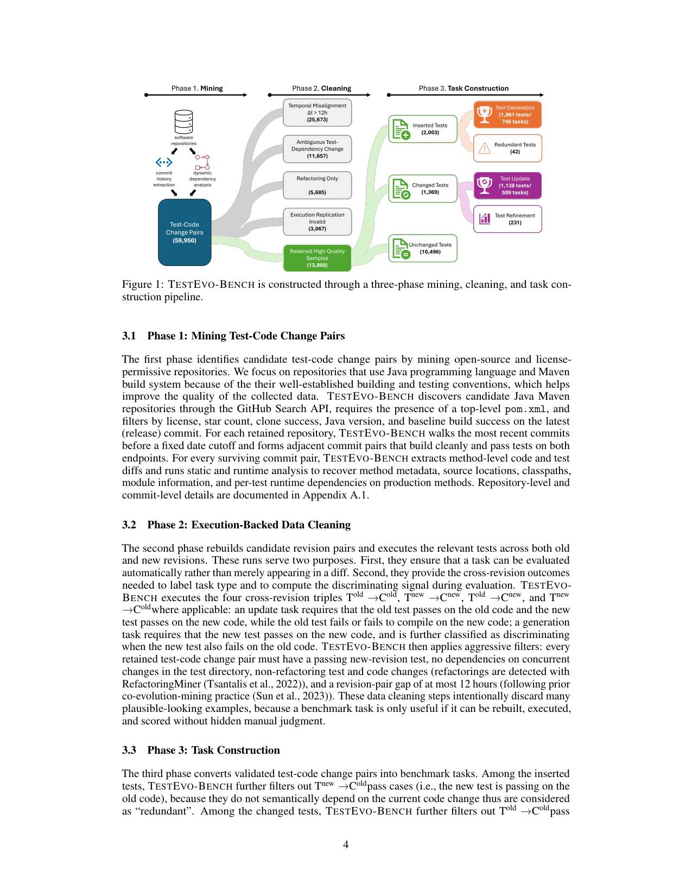
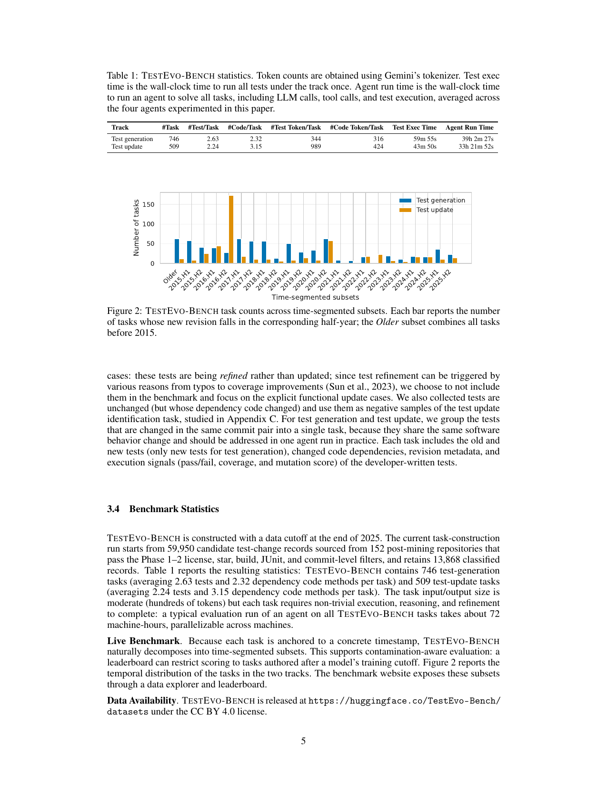
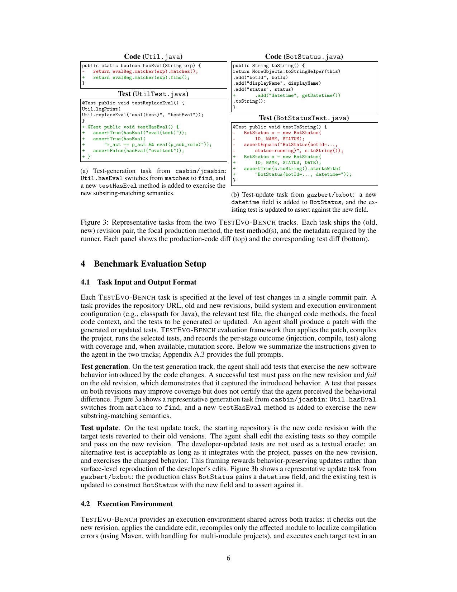
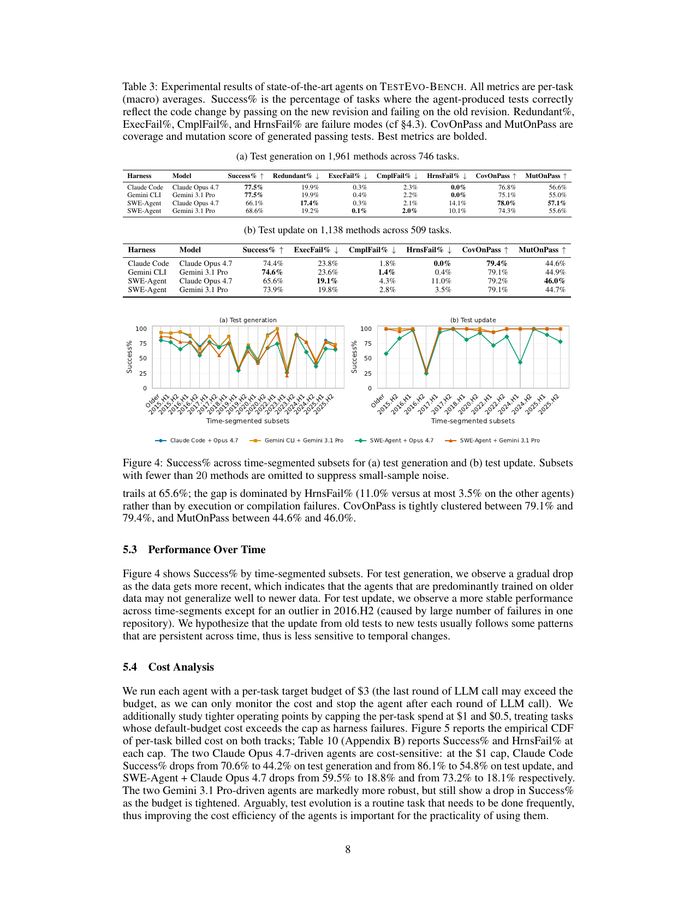
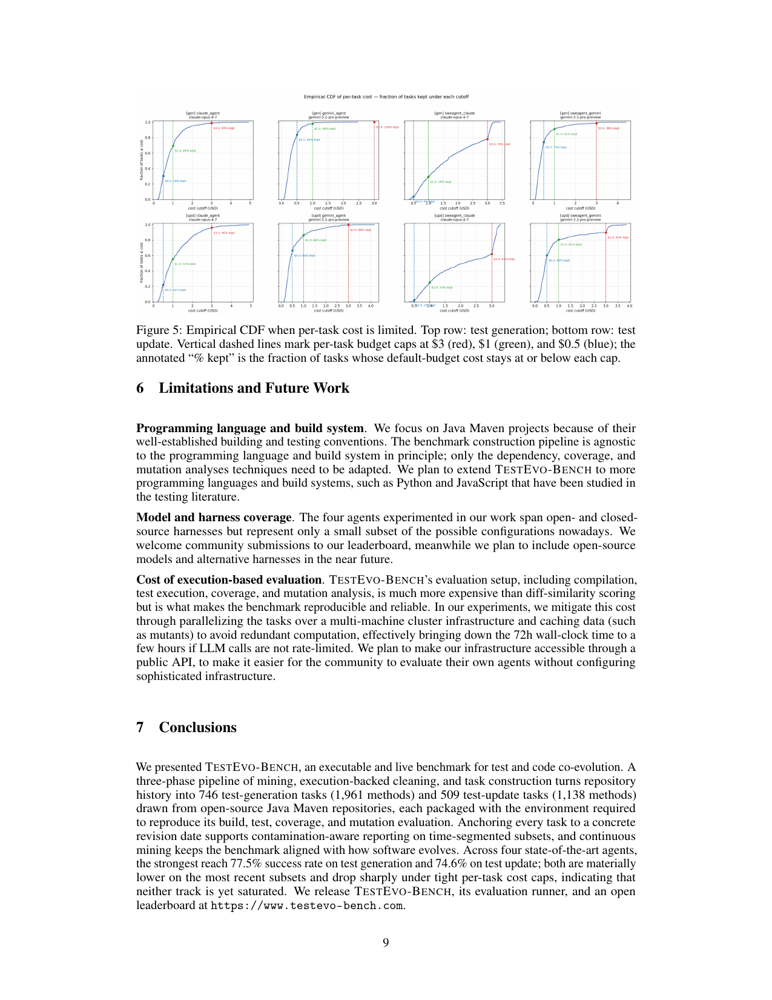
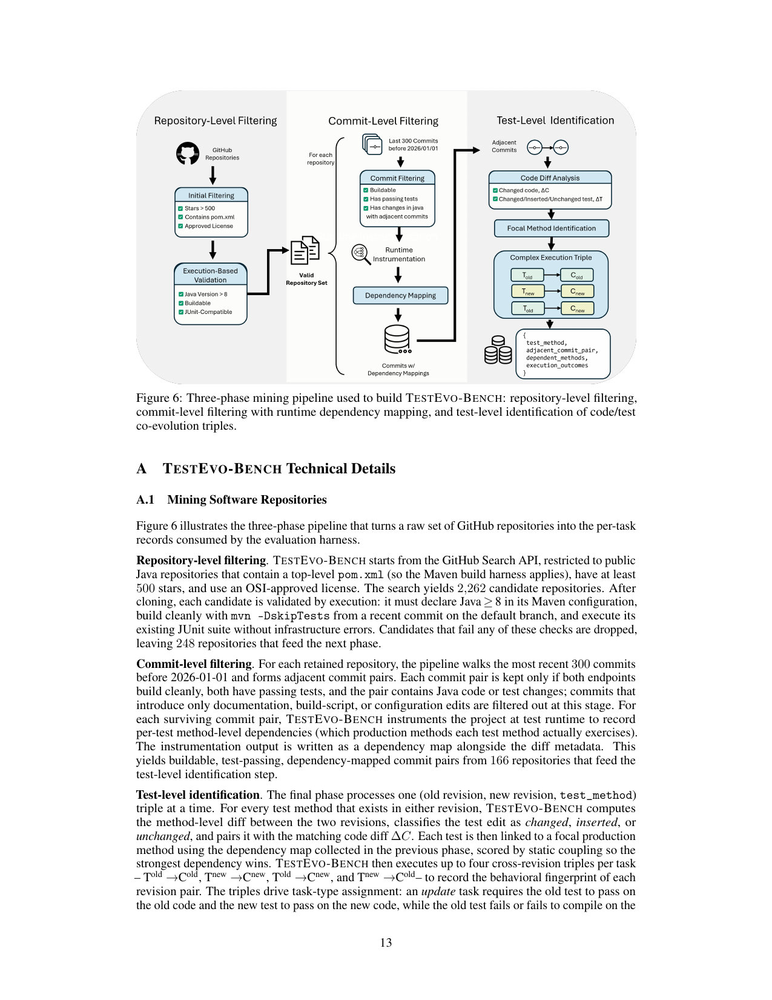
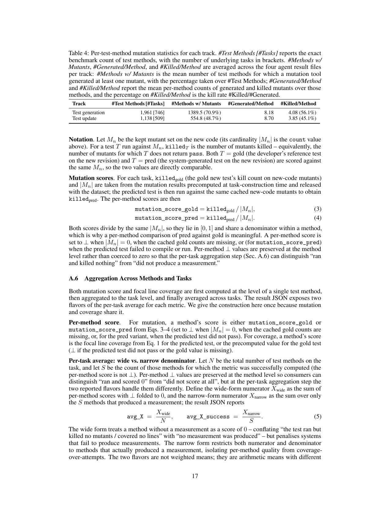
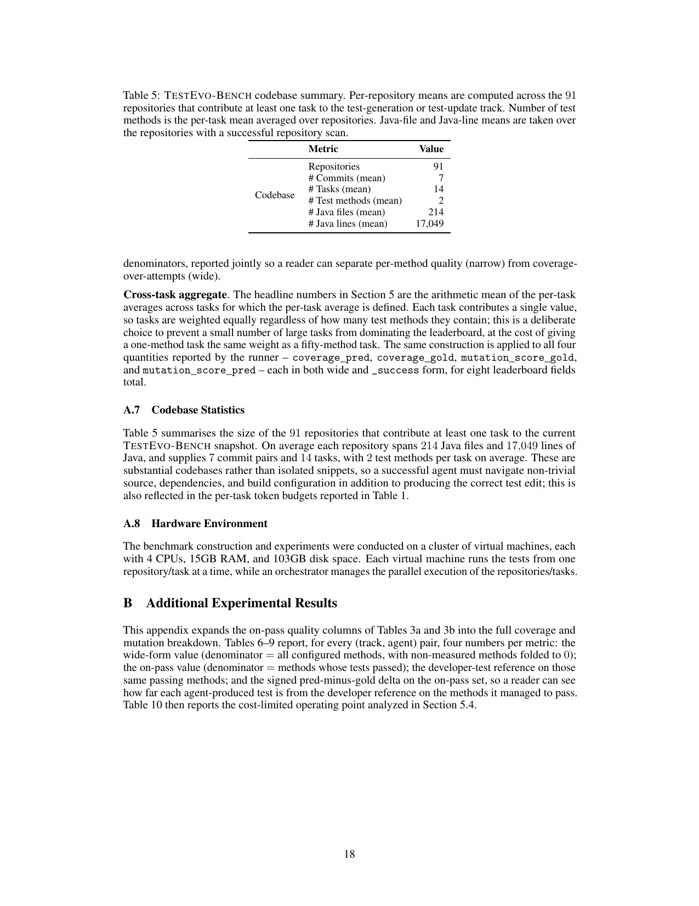
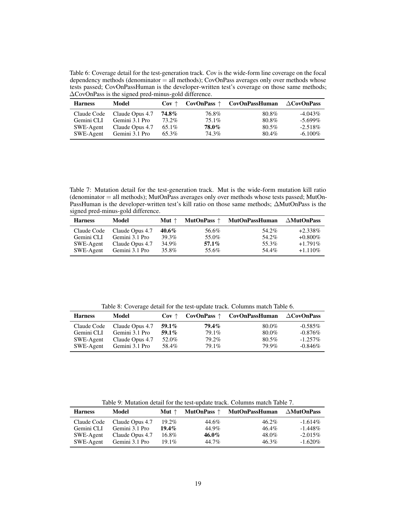
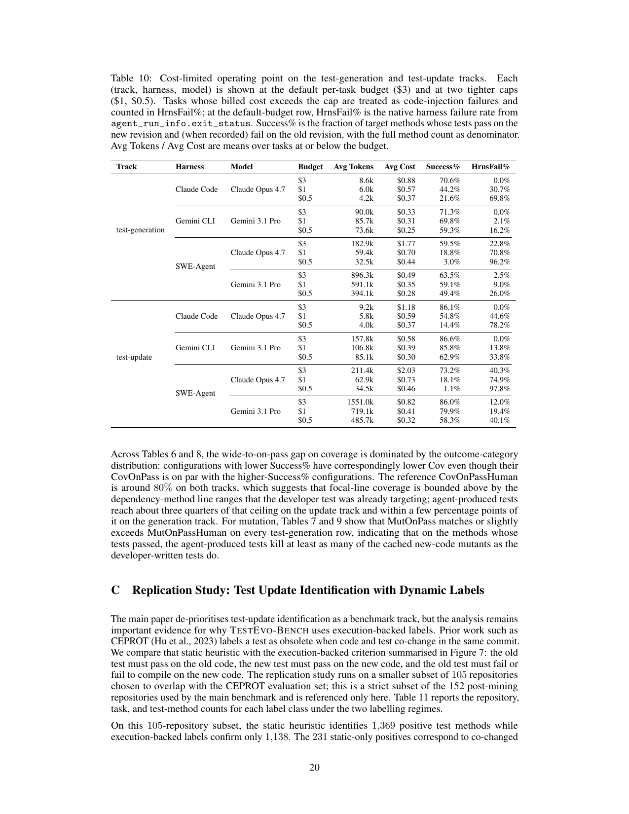
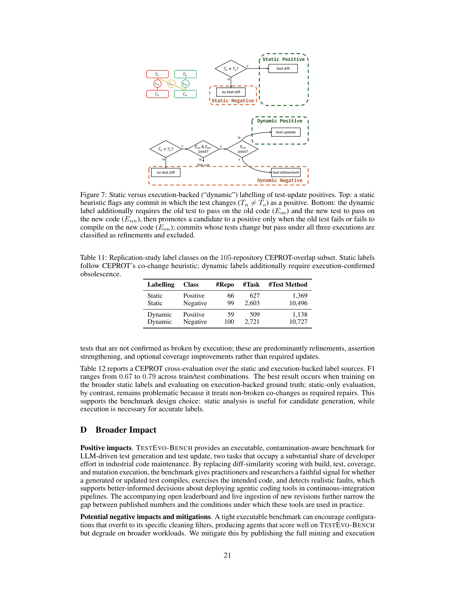
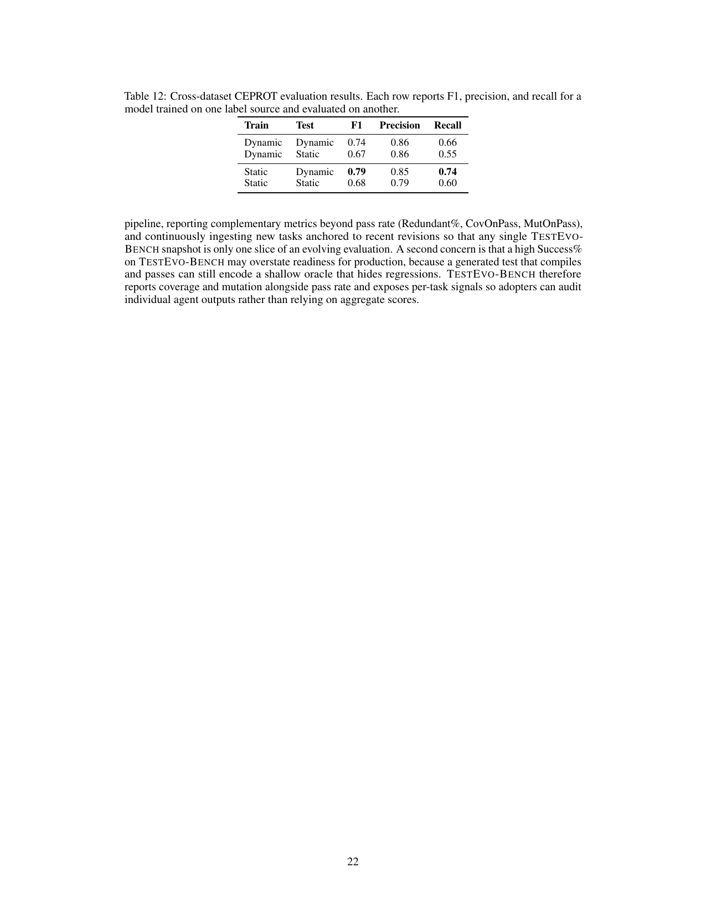
2. GitHub 三日增长项目
排名方法：使用 2026-07-03 日报中记录的当前 stars 作为约 72 小时历史快照，本次用 2026-07-06 15:32 CST 的 GitHub REST API 当前值减去历史值，按新增 stars 排序。由于 GitHub 登录 token 今日失效，本节使用未认证公开 API 查询必要仓库，已避免扩大候选范围。
| 项目 | 用途简介 | 语言 | 最近更新时间 | 当前 stars | 2026-07-03 快照 | 约三日新增 |
|---|---|---|---|---|---|---|
| obra/superpowers | Agentic skills framework 与软件开发方法论，围绕 skill 驱动的软件工程协作。 | Shell | 2026-07-06 07:32:08 UTC | 247,197 | 244,540 | +2,657 |
| firecrawl/firecrawl | 面向 agent/RAG 的网页搜索、抓取、结构化提取与交互 API。 | TypeScript | 2026-07-06 07:30:44 UTC | 145,375 | 143,299 | +2,076 |
| NousResearch/hermes-agent | Nous 的自成长 agent 项目，关注持续运行中的能力与记忆增长。 | Python | 2026-07-06 07:32:29 UTC | 209,894 | 208,093 | +1,801 |
| multica-ai/andrej-karpathy-skills | 从 Karpathy 观察提炼的 CLAUDE.md/agent 行为改进配置。 | 未标明 | 2026-07-06 07:30:06 UTC | 188,185 | 186,753 | +1,432 |
| farion1231/cc-switch | 跨平台桌面助手，用于 Claude Code、Codex、OpenCode、OpenClaw 等 agent 切换与调度。 | Rust | 2026-07-06 07:32:22 UTC | 113,676 | 112,437 | +1,239 |
3. GitHub 高 Star 未总结项目
排除规则：检查了 /Users/wuyuyang/Documents/Rhythm 下 11 份 morning-brief*.html，排除此前任何 GitHub 板块、候选快照或已总结集合中出现的仓库。另排除泛教程或非 agent 工程项目；按当前总 stars 降序排列。
| 项目 | 用途与核心能力 | 为什么值得关注 | 语言 | 最近更新时间 | 当前 stars |
|---|---|---|---|---|---|
| addyosmani/agent-skills | 生产级 engineering skills 集合，面向 AI coding agents。 | 把可复用工程经验沉淀为 agent 可执行技能，是 Agent Skill 生态的高 star 样本。 | Shell | 2026-07-06 07:29:17 UTC | 70,099 |
| earendil-works/pi | 统一 LLM API、agent loop、TUI、coding agent CLI 的 agent toolkit。 | 把 agent runtime 与开发者终端体验放在一起，适合观察轻量 coding agent 运行时方向。 | TypeScript | 2026-07-06 07:31:54 UTC | 67,933 |
| code-yeongyu/oh-my-openagent | 面向大型代码库的 coding agent harness / lazycodex 工具。 | 它把复杂代码库协作、token 预算和 agent harness 做成一体化体验。 | TypeScript | 2026-07-06 07:31:03 UTC | 64,972 |
| cline/cline | Autonomous coding agent，可作为 SDK、IDE extension 或 CLI assistant 使用。 | 它是开发者端 coding agent 产品化的重要开源代表，直接贴近 Codex/Claude Code 工作流。 | TypeScript | 2026-07-06 07:14:57 UTC | 64,333 |
| openinterpreter/openinterpreter | 面向 Deepseek、Kimi、Qwen 等开放模型的轻量 coding agent。 | 它代表开放模型上的本地/轻量 coding agent 方向，和闭源 agent 形成对照。 | Rust | 2026-07-06 04:19:08 UTC | 64,285 |
4. OpenAI / Anthropic 动态
OpenAI
未发现新发布内容。自 2026-07-03 上次日报以来，未在 OpenAI 官方 News 页面发现新的技术博客、研究文章、开发者更新或官方视频条目。最近已覆盖的官方条目仍为 2026-06-30 的 GeneBench-Pro 与 Core dump engineering post。
Anthropic
未发现新发布内容。Anthropic 官方 News 页面本次核验时最新仍是 2026-07-02 的 Fable 5 cyber safeguards / jailbreak framework 更新，该条已在 2026-07-03 日报覆盖；未发现后续新技术博客、研究文章、开发者更新或官方视频条目。
5. 来源与方法
主要来源
- 论文：arXiv abstract；PDF；TestEvo-Bench project site；Hugging Face。
- GitHub：GitHub REST API
https://api.github.com/repos/<owner>/<repo>，查询时间 2026-07-06 15:32 CST；历史基线来自 2026-07-03 日报。 - OpenAI 官方：OpenAI News。
- Anthropic 官方：Anthropic News；Fable safeguards update。
数据限制与不确定性
- 今天本机
gh显示 GitHub keyring token 已失效；GitHub star 数据改用未认证公开 REST API 查询必要仓库，最终推送可能受同一认证问题影响。 - GitHub stars 是实时值；“约三日新增”使用 2026-07-03 快照做差，窗口约 76 小时，接近但不精确等于 72 小时。
- 论文图表来自 arXiv PDF 页面渲染；关键表格人工转写为 HTML，并保留源页截图供核对。
- 周六周报仅在周六运行时生成；今天是周一，因此完全省略周报板块。
GitHub star 快照：增长候选
| 仓库 | 当前 stars | 历史快照 | 新增 | 语言 |
|---|---|---|---|---|
| obra/superpowers | 247,197 | 244,540 | +2,657 | Shell |
| NousResearch/hermes-agent | 209,894 | 208,093 | +1,801 | Python |
| multica-ai/andrej-karpathy-skills | 188,185 | 186,753 | +1,432 | 未标明 |
| affaan-m/ECC | 226,422 | 225,232 | +1,190 | JavaScript |
| firecrawl/firecrawl | 145,375 | 143,299 | +2,076 | TypeScript |
| farion1231/cc-switch | 113,676 | 112,437 | +1,239 | Rust |
| anomalyco/opencode | 182,775 | 181,775 | +1,000 | TypeScript |
| anthropics/skills | 158,547 | 157,729 | +818 | Python |
| browser-use/browser-use | 102,999 | 102,251 | +748 | Python |
| anthropics/claude-code | 136,422 | 135,538 | +884 | Python |
| shareAI-lab/learn-claude-code | 69,982 | 69,628 | +354 | Python |
| langchain-ai/langgraph | 36,598 | 36,349 | +249 | Python |
| FlowiseAI/Flowise | 54,312 | 54,214 | +98 | TypeScript |
| run-llama/llama_index | 50,675 | 50,607 | +68 | Python |
| agno-agi/agno | 41,012 | 40,968 | +44 | Python |
GitHub star 快照：高 Star 候选与排除
| 仓库 | 当前 stars | 语言 | 处理 |
|---|---|---|---|
| addyosmani/agent-skills | 70,099 | Shell | 入选 |
| microsoft/ai-agents-for-beginners | 68,677 | Jupyter Notebook | 排除：教程为主，非工程项目 |
| earendil-works/pi | 67,933 | TypeScript | 入选 |
| code-yeongyu/oh-my-openagent | 64,972 | TypeScript | 入选 |
| cline/cline | 64,333 | TypeScript | 入选 |
| openinterpreter/openinterpreter | 64,285 | Rust | 入选 |
| upstash/context7 | 58,642 | TypeScript | 候补 |
| colbymchenry/codegraph | 57,855 | TypeScript | 候补 |
| aaif-goose/goose | 50,702 | Rust | 候补 |
| ChromeDevTools/chrome-devtools-mcp | 45,989 | TypeScript | 候补 |
本次新增至“已总结仓库集合”的仓库
obra/superpowers, firecrawl/firecrawl, NousResearch/hermes-agent, multica-ai/andrej-karpathy-skills, farion1231/cc-switch, addyosmani/agent-skills, earendil-works/pi, code-yeongyu/oh-my-openagent, cline/cline, openinterpreter/openinterpreter。
归档与发布状态
已成功执行 designs/agent-brief-archive/scripts/update-and-publish.sh；本地归档、概览 SVG 与 GitHub Pages 仓库已更新并推送。注意：gh auth status 当前显示 keyring token 失效，但普通 git push 在本次运行中成功。